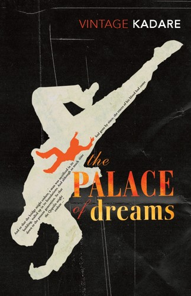
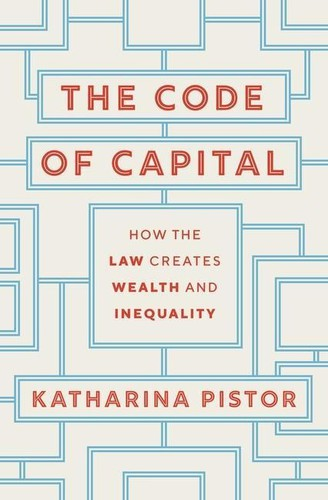
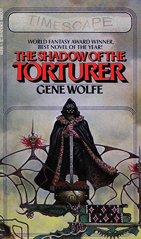
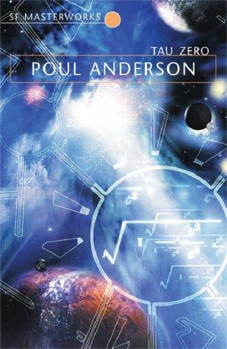
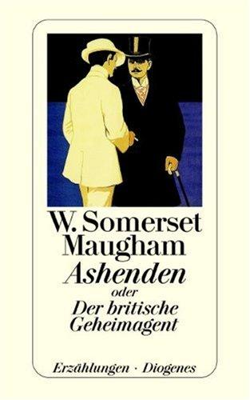
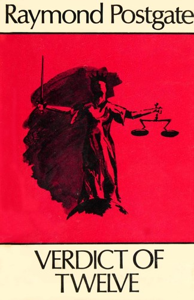

Recommendations for the week of 5 October 2026.
Three edges again chosen to dodge last week's veins — no poetry, no linguistics, no true crime this time. The translated fiction thread reaches Albania for the first time with a Kafkaesque dystopia of the dream-state; the narrative-nonfiction pick opens political economy and law, a fresh domain that ties the legal-narrative interest to where wealth actually comes from; and the literary SF edge finally reaches the demanding, unreliable-narrator New Wave the Golden-Age shelf never did. The comfort picks hold the three best-loved veins — big-idea SF, cold-weather espionage, Golden-Age crime — but reach for fresh authors: a hard-SF ride past the end of the universe, the ironic ur-text of the realistic spy story, and a murder trial dissected juror by juror.





